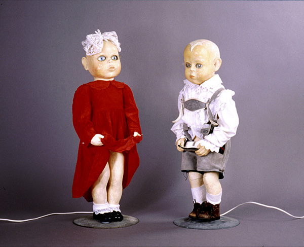

Протягом свого творчого шляху, окрім головної ідеї – живопису, автор звертався до найрізноманітніших видів, жанрів і технік, котрими сповна оперувала сучасна йому візуальна практика. Знімав відео, малював графіку, створював інсталяції, кінетичну скульптуру, анаморфози, зоотропи, опуси в руслі парадоксального дизайну, показував віджейські перфоманси.[1]
У полотнах Олександра Гнилицького повсякчас виникає мотив ігрової інтерпретації творів митців різних епох, що цілком вкладається у філософію часу, коли сформувався художник, – доби постмодерну. [2]
